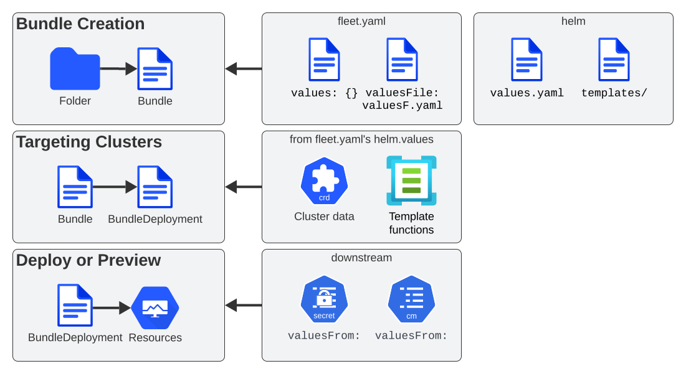

Contenido del repositorio Git
SUSE® Rancher Prime Continuous Delivery creará paquetes a partir de un repositorio git. Esto ocurre ya sea explícitamente especificando vías, o cuando se encuentra un fleet.yaml.
La carpeta podría contener un gráfico de Helm, o hacer referencia a uno. Podría ser un manifiesto de Kubernetes simple, o un directorio de Kustomize. Cada paquete se convierte en un único gráfico de Helm para su ampliación.
El archivo fleet.yaml contiene todas las opciones para la ampliación.
Nombres de paquetes
Por defecto, los nombres de los paquetes también se generarán a partir del nombre del GitRepo y la vía desde la que se crea el paquete. Sin embargo, el nombre de un paquete puede ser sobrescrito utilizando el campo name en un archivo fleet.yaml.
Los ciclos de vida de los paquetes se rastrean entre versiones mediante el campo Helm releaseName añadido a cada paquete. Si el releaseName no se especifica dentro de fleet.yaml, se genera a partir de GitRepo.name + path. Los nombres largos se truncarán y se añadirá un prefijo -<hash> (Los nombres de los paquetes están limitados a 53 caracteres de longitud).
Cómo se escanean los repos
El repositorio git no tiene una estructura explícitamente requerida. Es importante darse cuenta de que los recursos escaneados se guardarán como un recurso en Kubernetes, por lo que quieres asegurarte de que los directorios que estás escaneando en git no contengan recursos arbitrariamente grandes. En este momento hay una limitación de que los recursos desplegados deben gzip a menos de 1MB.
Se pueden definir múltiples vías para un GitRepo y cada vía se escanea de forma independiente.
Internamente, cada vía escaneada se convertirá en un paquete que SUSE® Rancher Prime Continuous Delivery gestionará, desplegará y monitorizará de forma independiente.
SUSE® Rancher Prime Continuous Delivery busca los siguientes archivos para determinar cómo se desplegarán los recursos.
| Archivo | Lugar | Significado |
|---|---|---|
Chart.yaml |
/ relativo a |
Los recursos se desplegarán como un gráfico de Helm. Consulta el |
kustomization.yaml |
/ relativo a |
Los recursos se desplegarán utilizando Kustomize. Consulta el |
fleet.yaml |
Cualquier subruta |
Si se encuentra algún fleet.yaml, se definirá un nuevo paquete. Esto permite mezclar gráficos, kustomize y YAML en bruto en el mismo repositorio. |
.yaml |
Cualquier subruta |
Si no se encuentra un |
overlays/{name} |
/ relativo a |
Al desplegar utilizando YAML en bruto (no Kustomize o Helm), |
Escaneo alternativo, definido explícitamente por el usuario
Además del método descrito anteriormente, SUSE® Rancher Prime Continuous Delivery también admite un enfoque más directo, impulsado por el usuario, para definir paquetes.
En este modo, SUSE® Rancher Prime Continuous Delivery cargará todos los recursos encontrados dentro del directorio base especificado. Solo intentará localizar un archivo fleet.yaml en la raíz de ese directorio si no se proporciona explícitamente un archivo de opciones.
A diferencia del método de escaneo tradicional, este no es recursivo y no intenta encontrar definiciones de paquetes que no sean las especificadas explícitamente por el usuario.
Ejemplo de estructura de directorios
driven
|___helm
| |__ fleet.yaml
|
|___simple
| |__ configmap.yaml
| |__ service.yaml
|
|___kustomize
|__ base
| |__ kustomization.yaml
| |__ secret.yaml
|
|__ overlays
| |__ dev
| | |__ kustomization.yaml
| | |__ secret.yaml
| |__ prod
| | |__ kustomization.yaml
| | |__ secret.yaml
| |__ test
| |__ kustomization.yaml
| |__ secret.yaml
|__ dev.yaml
|__ prod.yaml
|__ test.yamlDefinición correspondiente de GitRepo
kind: GitRepo
apiVersion: fleet.cattle.io/v1alpha1
metadata:
name: driven
namespace: fleet-local
spec:
repo: https://github.com/0xavi0/fleet-test-data
branch: driven-scan-example
bundles:
- base: driven/helm
- base: driven/simple
- base: driven/kustomize
options: dev.yaml
- base: driven/kustomize
options: test.yamlEn el ejemplo anterior, el usuario define explícitamente cuatro paquetes que se generarán.
-
En el primer caso, el directorio base se especifica como
driven/helm. Como se muestra en la estructura de directorios, esta ruta contiene un archivofleet.yaml, que se utilizará para configurar el paquete. -
En el segundo caso, el directorio base es
driven/simple, que contiene solo manifiestos de recursos de Kubernetes (configmap.yamlyservice.yaml). Dado que no se especifica ningún archivofleet.yamlni opciones, SUSE® Rancher Prime Continuous Delivery generará un paquete utilizando el comportamiento predeterminado: simplemente empaquetando todos los recursos encontrados dentro del directorio. -
Los casos tercero y cuarto hacen referencia al mismo directorio base:
driven/kustomize. Sin embargo, cada uno especifica un archivo de opciones diferente (dev.yamlytest.yaml, respectivamente). Estos archivos de opciones definen la configuración específica de superposición para cada entorno (por ejemplo, dev, test) seleccionando los subdirectorios de superposición de Kustomize apropiados y aplicándolos sobre la base compartida.
SUSE® Rancher Prime Continuous Delivery procesará estos como paquetes distintos, aunque provengan de la misma ruta base, porque los archivos de opciones proporcionados apuntan a diferentes configuraciones.
Un ejemplo de los archivos utilizados en los terceros y cuartos paquetes sería el siguiente: (Estos archivos siguen el mismo formato que fleet.yaml, pero dado que ahora podemos referirnos a ellos por nombre, podemos usar uno que se ajuste mejor a nuestras necesidades)
namespace: kustomize-dev
kustomize:
dir: "overlays/dev"Es importante señalar que cualquier ruta definida en estos archivos debe ser relativa al directorio base utilizado cuando se describió el paquete.
Por ejemplo, con la estructura mencionada anteriormente, estamos definiendo el directorio base como driven/kustomize. Ese es el directorio que necesitamos usar como raíz para las vías utilizadas en los archivos de Kustomize.
Podríamos decidir colocar el archivo dev.yaml en la vía driven/kustomize/overlays/dev (esto es compatible), y luego definir el paquete como:
bundles:
- base: driven/kustomize
options: overlays/dev/dev.yamlSin embargo, la vía definida dentro de dev.yaml aún debe ser relativa a driven/kustomize.
Esto se debe a que cuando SUSE® Rancher Prime Continuous Delivery lee los archivos de opciones, siempre utiliza el directorio base como raíz.
En otras palabras, con el ejemplo anterior… esto sería incorrecto:
namespace: kustomize-dev
kustomize:
dir: "."Y la definición correcta debería seguir siendo:
namespace: kustomize-dev
kustomize:
dir: "overlays/dev"Con esta nueva forma de definir los paquetes, SUSE® Rancher Prime Continuous Delivery se vuelve mucho más directa y también simplifica la adopción de ampliaciones utilizando Kustomize. En el ejemplo, podemos ver un caso de uso completo de Kustomize donde para cada paquete, podemos especificar qué versión queremos.
Con la opción de escaneo anterior, SUSE® Rancher Prime Continuous Delivery no puede determinar qué YAML queremos usar para configurar el paquete, por lo que intenta encontrarlo por sí mismo (lo cual, en ocasiones, no proporciona suficiente flexibilidad).
|
Excluyendo archivos irrelevantes de los paquetes escaneados por el usuario Al utilizar este modo de escaneo de paquetes, SUSE® Rancher Prime Continuous Delivery no excluye los archivos de configuración de paquetes que no están explícitamente referenciados en el GitRepo. Por ejemplo, en la estructura de directorios del ejemplo anterior:
Esto se puede mitigar utilizando un archivo |
Excluyendo archivos y directorios de los paquetes
SUSE® Rancher Prime Continuous Delivery soporta la exclusión de archivos y directorios mediante archivos .fleetignore, de manera similar a cómo se comportan los archivos .gitignore en los repositorios de git:
-
La sintaxis glob se utiliza para hacer coincidir archivos o directorios, utilizando
filepath.Matchde Golang -
Las líneas vacías se omiten, y por lo tanto pueden ser utilizadas para mejorar la legibilidad
-
Caracteres como espacios en blanco y
#pueden ser escapados con una barra invertida -
Los espacios finales son ignorados, a menos que sean escapados
-
Los comentarios, es decir, las líneas que comienzan con
#sin escapar, son omitidos -
Una línea dada puede coincidir con un archivo o un directorio, incluso si no se proporciona un separador
-
Se puede encontrar una coincidencia en cualquier nivel por debajo del directorio donde vive un
.fleetignore -
Se admiten múltiples archivos
.fleetignore
root/
├── .fleetignore # contains `ignore-always.yaml'
├── something.yaml
├── bar
│ ├── .fleetignore # contains `something.yaml`
│ ├── ignore-always.yaml
│ ├── something2.yaml
│ └── something.yaml
└── foo
├── ignore-always.yaml
└── something.yamlNo admitido:
-
Dobles asteriscos (
**) -
Inclusiones explícitas con
!
fleet.yaml
El fleet.yaml es un archivo opcional que se puede incluir en el repositorio git para cambiar el comportamiento de cómo se despliegan y personalizan los recursos. El fleet.yaml siempre está en la raíz en relación con el path del GitRepo y si se encuentra un subdirectorio con un fleet.yaml, se define un nuevo paquete que se configurará de manera diferente al paquete padre.
|
Dependencias del gráfico de Helm: El SUSE® Rancher Prime Continuous Delivery gestiona automáticamente la actualización de las dependencias del gráfico de Helm, a menos que la bandera Si se desactivan las actualizaciones automáticas de dependencias, debes ejecutar manualmente:
Consulta la documentación de SUSE® Rancher Prime Continuous Delivery de Rancher para más información. |
Los campos disponibles están documentados en la referencia fleet.yaml. Para un repositorio Helm privado, los usuarios pueden hacer referencia a un secreto del recurso del repositorio git. Consulta Uso de Repositorios Helm Privados.
Uso de Valores de Helm
Cómo se aplican los cambios a `values.yaml`:
-
Los cambios aplicados más recientemente anulan los valores anteriores.
-
Orden de fusión:
helm.values→helm.valuesFiles→helm.valuesFrom

El paso de targeting puede tratar los valores como plantillas utilizando la información del clúster. Más información: plantillas en fleet.yaml.
Puedes desactivar esto usando disablePreProcess.
Credenciales en Valores
Si el gráfico genera credenciales, anúlalas o el gráfico puede desplegarse continuamente.
Las credenciales cargadas a través de valuesFrom están encriptadas en reposo si la encriptación en reposo de Kubernetes está habilitada.
Plantillado
El paso de segmentación puede tratar los valores como una plantilla y completar la información del recurso clusters.fleet.cattle.io. Para más información, consulta Plantillado de valores de Helm.
Puedes desactivar esto en fleet.yaml, configurando disablePreProcess. Esto es útil para evitar conflictos con otros lenguajes de plantillado.
No es necesario hacer referencia al propio values.yaml del gráfico a través de valuesFiles:. El archivo values.yaml contenido en el gráfico se utiliza siempre como predeterminado cuando el agente instala el gráfico.
Si el gráfico genera certificados o contraseñas en sus plantillas, estos valores deben ser anulados. De lo contrario, el gráfico podría ser desplegado continuamente a medida que estos valores cambian.
Las credenciales cargadas desde el clúster de sentido descendente con valuesFrom están, por defecto, encriptadas en reposo, cuando la encriptación de datos está habilitada en Kubernetes. Las credenciales contenidas en el archivo values.yaml predeterminado, o definidas a través de values: o valuesFiles, no lo están, ya que se cargan desde el repositorio cuando se crea el paquete.
Los clústeres endurecidos deben añadir los CRDs de Fleet a la lista de recursos encriptados en reposo, en el clúster de sentido ascendente, al almacenar credenciales en los paquetes.
Entendiendo Helm values.yaml vs Fleet valuesFiles
Instalar gráficos de Helm con Fleet ofrece múltiples formas de configurar y hacer referencia a valores, utilizando el values.yaml integrado del gráfico y archivos de valores adicionales referenciados en fleet.yaml. Estos archivos sirven para diferentes propósitos, y es importante entender cómo interactúan.

Ejemplo de estructura de directorios:
.
├── Chart.yaml
├── fleet.yaml
├── README.md
├── templates/
│ ├── deployment.yaml
│ └── service.yaml
└── values.yaml # chart defaultsPuedes utilizar el archivo values.yaml de un gráfico de Helm para:
-
Proporcionar configuraciones predeterminadas y permitir a los usuarios anular las predeterminadas sin modificar el gráfico en sí.
-
Definir configuraciones predeterminadas comunes de Kubernetes.
El values.yaml de un gráfico de Helm no admite plantillado. Cualquier sustitución ocurre durante el renderizado del gráfico antes de que Fleet aplique el gráfico.
-
No puedes utilizar variables al estilo shell (por ejemplo, `${var}`) dentro de este archivo.
-
Si aparece `${var}`, Helm lo trata como texto plano; no necesitas escaparlo.
Archivos values de Fleet referenciados desde fleet.yaml
Fleet te permite referenciar archivos de valores adicionales a través de fleet.yaml. Estos archivos anulan o extienden las configuraciones predeterminadas del gráfico.
-
Una entrada
valuesFileses equivalente a copiar y pegar el contenido de ese archivo en la sección de valores defleet.yaml. -
Es principalmente una característica de conveniencia para dividir valores en múltiples archivos.
-
A diferencia del
values.yamldel gráfico de Helm, los archivos de valores de Fleet admiten plantillado, lo que permite una configuración dinámica por entorno.
Ejemplo de fleet.yaml:
helm:
valuesFiles:
- values.prod.yaml # overrides baselinePuedes utilizar valuesFiles de fleet referenciado desde fleet.yaml para:
-
Aplicar anulaciones específicas del entorno (desarrollo, staging, producción).
-
Habilitar características avanzadas no incluidas en las configuraciones predeterminadas del gráfico.
Mejor práctica: Ya sea que utilices helm values.yaml, fleet.yaml valores:, o valuesFiles, nunca almacenes credenciales en estos archivos. El enfoque recomendado y más seguro es utilizar valuesFrom, que hace referencia a los Secrets o ConfigMaps de Kubernetes. Aunque esto requiere crear los Secrets en los clústeres en sentido descendente, asegura que los datos sensibles se almacenen de forma segura.
Usando ValuesFrom
Estos ejemplos muestran el estilo y formato para usar valuesFrom.
Propagando ConfigMaps y Secrets a clústeres en sentido descendente: Los ConfigMaps y Secrets deberían crearse generalmente directamente en los clústeres en sentido descendente.
Sin embargo, a partir de SUSE® Rancher Prime Continuous Delivery v0.14.0, también se pueden hacer referencia a través del campo downstreamResources de un HelmOp para ser propagados automáticamente a los clústeres en sentido descendente objetivo.
Consulta recursos en sentido descendente experimentales para más información.
Ejemplo de ConfigMap:
apiVersion: v1
kind: ConfigMap
metadata:
name: configmap-values
namespace: default
data:
values.yaml: |-
replication: true
replicas: 2
serviceType: NodePortEjemplo de Secret:
apiVersion: v1
kind: Secret
metadata:
name: secret-values
namespace: default
stringData:
values.yaml: |-
replication: true
replicas: 3
serviceType: NodePortHaciendo referencia a ellos:
helm:
chart: simple-chart
valuesFrom:
- secretKeyRef:
name: secret-values
namespace: default
key: values.yaml
- configMapKeyRef:
name: configmap-values
namespace: default
key: values.yaml
values:
replicas: "4"Personalización por Clúster
El GitRepo define a qué clústeres se despliega un repositorio. El fleet.yaml define personalizaciones por objetivo.
Todos los clústeres y grupos en el mismo espacio de nombres se evalúan en función de los objetivos. Se aplica la primera coincidencia.
targetCustomizations:
- name: all
clusterSelector: {}
- name: none
clusterSelector: nullCoincidencia por nombre de clúster:
targetCustomizations:
- name: prod
clusterName: fleetnameConsulta personalización por clúster.
Personalización de Recursos YAML en Crudo
# Base files
deployment.yaml
svc.yaml
# Overlay files
overlays/custom/configmap.yaml
overlays/custom/svc.yaml
overlays/custom/deployment_patch.yamlReglas:
-
Los nombres coincidentes reemplazan los archivos base.
-
_patch.los archivos aplican parches (JSON/estratégico/JSONPatch).
Estado del Clúster y del Paquete
Vea campos de estado.